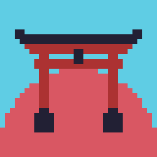
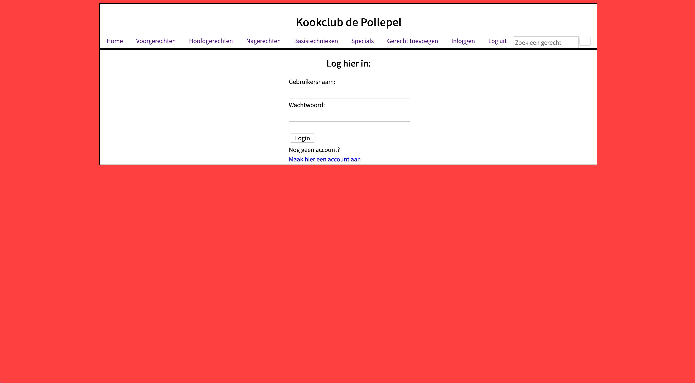
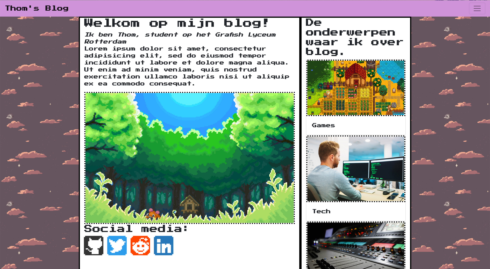

Github
Contact
Projecten
Over
Mijn eerste project
Het was een school opdracht die ik met een klasgenoot heb gemaakt.
klik op de tekst voor meer!
Mijn startpage
Ik heb dit gemaakt meer uit nieuwsgierigheid wat ik er mee kan, ik ben er nog steeds mee bezig. Ik maak gebruik van een firefox addon die je new tab redirect naar een andere site.
klik op de tekst voor meer!
Stagewebsite GLR (schoolopdracht)
Dit is een project gemaakt voor een opdracht van school, dit heb ik gemaakt met 3 andere, waar ik de backend van de website heb gemaakt.
klik op de tekst voor meer!

Kookclub de pollepel (schoolopdracht)
Dit is een project voor een schoolopdracht waar wij een website moesten maken voor een kookclub, ik heb dit samen gemaakt met drie andere waar ik de backend heb gedaan.
klik op de tekst voor meer!

Thom's Blog (schoolopdracht)
Dit is een website die ik Thom's blog noem omdat wij voor school een opdracht moesten maken die een fluid-design filosofie had en ik dit had bedacht om te doen.
klik op de tekst voor meer!